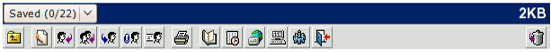
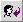
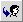
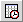
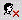
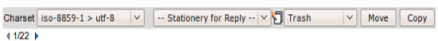

| When you
open a message, a new toolbar appears, giving you more options for the specific page you are on.
The Message Toolbar:

Reference Chart:
| Term/Icon |
Name/Alternate Text |
Action It Performs |
 | Back to Previous | Takes you back to the previous mailbox. |
 | New Message | Creates a new e-mail message*. |
|
 | Reply | Replies to the sender of the message. |
 | Reply All | Replies to all senders of the e-mail, including forwarders. |

|
Forward
|
Forwards the message inline.
|
 | Forward as Attachment | Forwards the message as an attachment. |

|
Forward as original
|
Forwards the message as being a new message.
|

|
Address Book
|
Opens the address book for editing.
|
|
| Print | Displays a printable version of the message. |
|
 | Calendar | Opens the calendar. |

|
Webdisk
|
Open your file storage.
|
|
SSH Terminal
|
Opens a secure terminal session to your host system.
|

|
User Preferences
|
Allows you to alter and personalize your settings.
|
 | Logout | Exits your OpenWebMail session. |

|
Move to Trash
|
Moves the selected message(s) to the trash.
|
Additional Message Icons:
| Term/Icon |
Name/Alternate Text |
Action It Performs |
|
Download message
|
Downloads the message to the local disk of your computer.
|
![Import Address Book [sender]](../../images/buttons/add_address.gif) | Import Address Book [sender] | Adds the sender of the e-mail to your address book. |
|
 | Block Sender | Blocks the sender by adding a filter. |
 | Block SMTP Relay | Blocks the
SMTP
Relay of that message (the server that forwarded the message). |
There is a second small toolbar below the message:

Normally OpenWebMail will change the Character Set of the view
message screen to the appropriate character set for that message,
thus allowing you to view messages in foreign languages correctly.
You may choose a different character set manually in the drop menu.
The drop menu in which the text Select Stationery for Reply
is in, allows you to select what stationery you would like to use for a
reply. Open the menu to display a list of stationery you have
made. Once you have selected one, you will be able to reply to
the message with the stationery you selected. If you do not have
any stationery set up, click the stationery button (
 ) after which you will be able to edit and/or create new stationery. For a definition of stationery see
The Settings Toolbar. ) after which you will be able to edit and/or create new stationery. For a definition of stationery see
The Settings Toolbar.
In the last drop menu you can Move or Copy a messages to another folder, even to Trash. See Moving & Copying Messages for more information.
The Left () and Right ( ) arrows accompanying the "1/22" are for browsing
between multiple messages in the mailbox (the left arrow navigates to
the previous message, the right arrow navigates to the next message).
The numbers in between the arrows tells you what message you are
viewing
(1 specifies the 1st message in the folder) and the total messages (22) in the folder. ) arrows accompanying the "1/22" are for browsing
between multiple messages in the mailbox (the left arrow navigates to
the previous message, the right arrow navigates to the next message).
The numbers in between the arrows tells you what message you are
viewing
(1 specifies the 1st message in the folder) and the total messages (22) in the folder.* If you are viewing a message in the Draft folder (see
Managing Your Folders
), this button will Edit the message, rather than start a new one. |